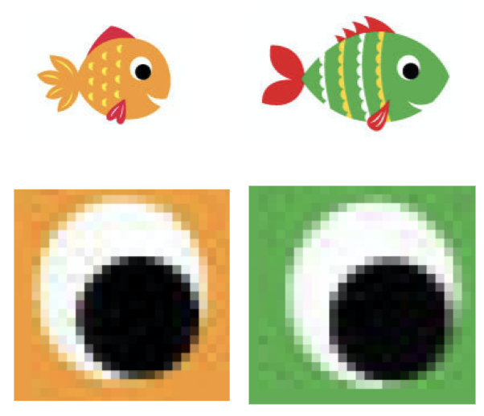
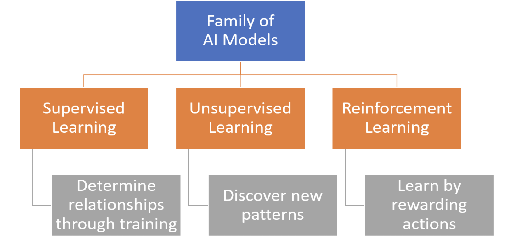

Lesson 5 - Machine Learning Models
At the end of this lesson, you will be able to:
- Distinguish between the 3 types of Machine Learning (supervised, unsupervised, reinforcement).
- Use supervised machine learning to train Google's 'Quick, Draw!' model.
Training the model
In the AI for Oceans activity, you used image input of ‘fish’ and ‘not fish’ to train the model. This type of training, where you give the computer examples of ‘fish’ and ‘not fish’ is called supervised learning. As images were input as ‘fish’, the model looks for similar pixel shading patterns.

Input labeled as ‘not fish’ during training were examined to find patterns similar to ‘fish’ and patterns that were not in ‘fish’. The model is learning how to distinguish images containing ‘fish’ patterns that are not fish!
Machine Learning Models
Machine learning models are defined by the presence or absence of human influence on raw data — whether a reward is offered, specific feedback is given, or labels are used.
Let’s try to understand with the help of video.
Machine Learning algorithms fall roughly in three categories:
- Supervised Learning
- Unsupervised Learning
- Reinforcement Learning

Check for understanding!
What are the challenges faced by Machine Learning?
AI impact on jobs
- Public perception around artificial intelligence centers around job loss, this concern should be probably re-framed.
Privacy
- Data privacy, data protection and data security, are of prime concerns and have allowed policymakers to make more strides here in recent years.
Bias and discrimination
- Instances of bias and discrimination across a few intelligent systems have raised many ethical questions regarding the use of artificial intelligence.
Accountability
- There isn’t significant legislation to regulate AI practices, there is no real enforcement mechanism to ensure that ethical AI is practiced.
In the next lesson we will talk about Supervised Learning.